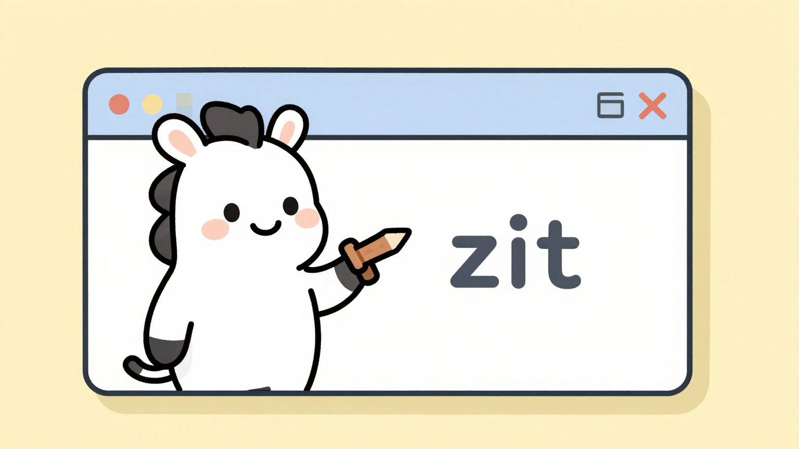

Prompt and go
Pass your prompt as plain text. zit handles submission, polling, and the final output URL.
Generate polished illustrations, banners, mockups, and visual drafts with one small command and WaveSpeed Z-Image-Turbo.
MIT licensed · Node.js 18+ · no build step

$ zit "friendly robot mascot" --ratio wide --output ./images ✓ generated 1536×864 ✓ saved ./images/zit-robot.jpeg
zit skips the sprawling dashboard. It focuses on a fast, affordable model and the controls you actually reach for when making visuals for a project.
Pass your prompt as plain text. zit handles submission, polling, and the final output URL.
Use familiar aliases like wide, portrait, poster, or phone—or provide exact dimensions.
Download locally, set a seed, request JSON, or feed in a reference image from disk.
There is no project setup, config file, or build pipeline. Install it once, set your API key, and create.
npm install -g @crapthings/zit-cli
export WAVESPEED_API_KEY="your-api-key"
zit "editorial product photo" --ratio 4:5
Quick aliases map to sensible dimensions with the longest side capped at 1536 pixels.